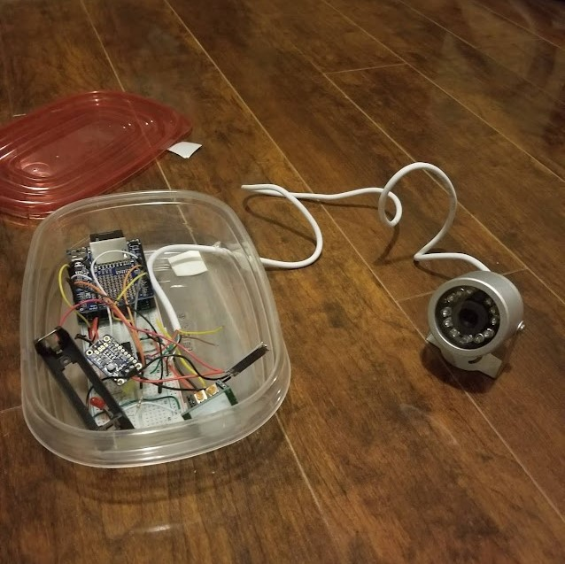
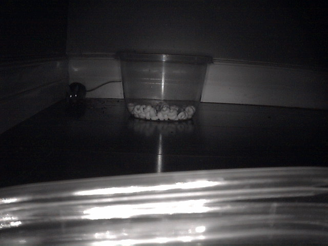

Overview
This is a silly one
A friend of mine told me he had a mouse problem in his basement. He had hired an exterminator previously, but wasn't sure if the problem was over despite all the traps that were set. He asked if I knew a way to confirm...
I decided to make a motion activated camera. I didn't want to spend too long on this one, so I used an Arduino + SD card shield, a PIR sensor, and a black and white camera from Adafruit. Adafruit makes surprisingly well documented sample code. The entire thing was powered with a single 18650 batter and protection IC off amazon. The camera was the most expensive part of the project, which totalled to about $60.
After setting up the camera in his basement with some peanut butter and cheerios, I returned a week later to find this saved on the SD card.
I don't think I'll ever forget this project. Not because it was difficult, but because of the shock from seeing the picture! The setup can probably be used to take wildlife pictures outside, with a more weatherproof casing.